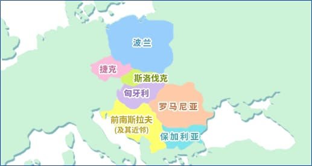

东欧的酸奶
前南斯拉夫及其近邻/捷克和斯洛伐克/匈牙利/保加利亚/波兰/罗马尼亚

前南斯拉夫及其近邻
（马其顿、克罗地亚、塞尔维亚、黑山、波斯尼亚和黑塞哥维那）
在前南斯拉夫，纯味酸奶被称为“Kiselo Mleko”，在波斯尼亚和黑塞哥维那以及克罗地亚则叫“Kisela Balenika”。此外，还制作一种叫做“Jimene”的浓缩发酵乳，每年10-11月将杀菌冷却后的羊乳放入木桶中，放入起子培养物（种菌）进行一天发酵，第二天再续加杀菌乳，再持续发酵一周左右，然后去除乳清。除了这些以外，还有在山岳地带制作的中温性乳酸菌发酵乳“Gruzovina”；在克罗地亚山村制作的浓缩发酵乳“Versa”，以及在波斯尼亚和黑塞哥维那、塞尔维亚和黑山制作的，往乳液中加放食盐发酵而成的“Scolpe”等。
捷克和斯洛伐克
这一地区的畜牧业和乳业也有着悠久的历史。在使用黄油起子培养物制成的发酵乳中，有非脂乳固体含量12%，脂肪含量6%的浓缩酸牛奶，也有并用凝乳酶的蛋白质含量6%的“Alma”，还有用kefir起子培养物发酵的“凯菲尔牛奶”，以及使用制作Bryndza奶酪时的副产品乳清发酵而成的kefir式饮料“Sour jansica”等。从发酵乳中去除乳清的浓缩发酵乳叫做“Tobaro”。
匈牙利
酸奶被称为“Taho”，在公元14世纪就已经使用了这一称呼。以羊乳为原料，加入凝乳酶，乳酸经发酵后去除部分乳清制成的传统性浓缩发酵乳“Sustee”，以及将乳清通过乳酸菌和酵母发酵的“Urda”等。
保加利亚
传统的发酵乳有以下几种。
Kiselo mljako
由羊乳、牛乳和水牛乳制成，是国民饮食生活中不可缺少的一种酸奶。使用高温乳酸菌（培养温度:37-45℃）保加利亚菌和嗜热链球菌进行发酵。
保加利亚牛奶
在煮沸后冷却的羊乳或牛乳中加入保加利亚菌，在温度40-45°C发酵而成的酸味很强的一种发酵乳。
Brano mljako
这是山岳地带作为冬季蛋白源为人们常用的一种发酵乳。在加热冷却后的羊乳中加入起子培养物（种菌），每天再将煮沸冷却的羊乳续加，在15-20℃下继续发酵25-30天。将完成的发酵乳的表面用向日葵油、黄油、融化后的卡什卡瓦尔奶酪等覆盖后保存。每年9-10月制作。
Ulug tonic
在巴尔干山岳地带，使用羊乳制成的准酸奶产品。
波兰
在东欧国家中，属于畜牧业和乳业发达的国家。使用黄油起子培养物制成的发酵乳或kefir制造大量的产品。有一种将制作Bryndza奶酪时产生的副产品乳清进一步发酵制成的kefir式饮料“Rinqika”。从发酵乳中去除乳清后的浓缩发酵乳叫做“Tvorog”。
罗马尼亚
有使用黄油起子培养物制作的发酵乳、kefir、嗜酸乳杆菌乳等。浓缩发酵乳被称为“Okixigara”。